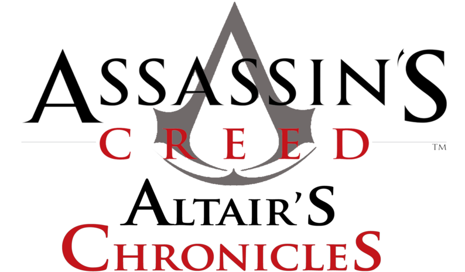

TITOLO: Assassin's Creed: Altaïr's Chronicles
SVILUPPO: Ubisoft Montreal, Gameloft
DATA DI USCITA: 2008 (Nintendo DS, iOS e Android)
COLLOCAMENTO STORICO: Medioevo, Terza Crociata
TRAMA:
Siamo nel 1190, durante la Terza Crociata. Altair dopo aver affrontato un arduo viaggio, torna ad Aleppo, che con sorpresa del protagonista, è attaccata da un manipolo di Templari, qui Al-Mualim, affida ad Altair un arduo compito: recuperare il Calice, un oggetto sacro che si narra essere capace di donare a chi lo possiede il potere di cambiare il destino dell'umanità. Altair dovrà lottare contro Lord Basilisk, lo spietato Signore dei Templari, che sarà l'antagonista principale del gioco, anch'egli intenzionato a recuperare l'artefatto. Per ritrovare il Calice Altair deve recuperare tre chiavi per entrare nel tempio dove il Calice è custodito. Dopo aver appreso con grande sorpresa che il Calice è una donna da lui ben conosciuta, Adha, Altair dovrà affrontare Basilisk. Questa lotta avrà un triste epilogo in cui Altair, dopo aver eliminato l'armata di Lord Basilisk nonché il Leader dei Templari stesso, si vedrà portare via la donna chiamata anche "il Calice" (Adha) dai Templari sopravvissuti.
ARMI:
Spada di Altair: l'arma principale nei combattimenti, consente di sferrare attacchi rapidi o potenti (se caricati). Consente di contrattaccare i colpi nemici utilizzando anche diverse combo. Rispetto alle altre spade questa è molto più potente e leggera.
Coltelli da lancio avvelenati: coltelli che vengono lanciati contro i nemici che, oltre a ferire, stordiscono per un po' l'avversario grazie ad un veleno. Possono essere usati anche per raggiungere bersagli lontani. Durante il gioco possono essere trovate anche casse contenenti questi pugnali per rifornirsi.
Bombe: bombe che si possono lanciare o lasciare a terra ed aspettare che esplodano. Possono essere usate per attaccare nemici o per distruggere muri. Durante il gioco possono essere trovate anche casse contenenti queste bombe per rifornirsi.
Lama celata: tratto distintivo degli Assassini, la lama celata è una polsiera in cui è nascosto un meccanismo a molla, attivato con un rapido scatto del polso; ideale per le uccisioni silenziose. Il meccanismo della lama indica l'assoluta devozione dell'assassino alla causa: richiede infatti l'amputazione di due falangi dell'anulare per usare al meglio l'arma
Bombe fumogene: possono essere lasciate a terra oppure essere lanciate. Emanano un fumo usato per diversivo per scappare, ma dopo un po' il fumo si dissolve.
Balestra: usata per attaccare i nemici da lontano o per attivare leve lontane.
Rampino: non proprio un'arma viene usata per spostarsi o per tirare a terra gli avversari per ucciderli successivamente con un colpo di spada.